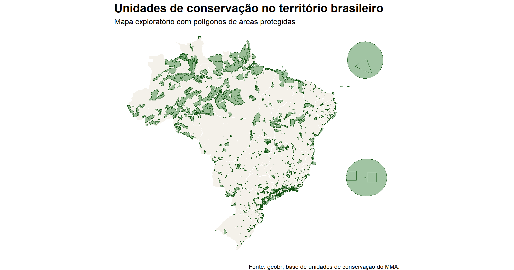
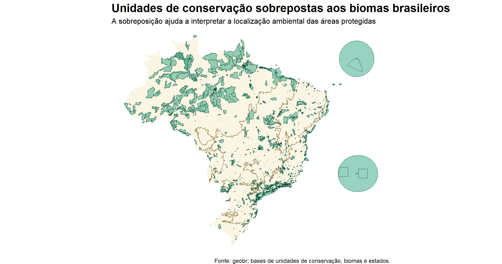
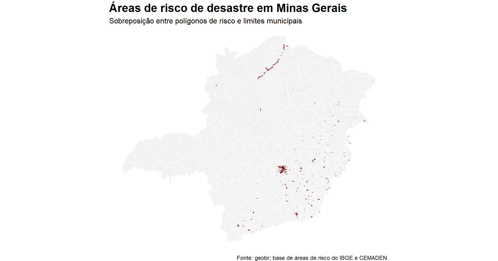

| argumento | interpretação |
|---|---|
date |
Data da base no formato AAAAMM. Exemplo usado: 202503. |
simplified |
Se TRUE, retorna geometria simplificada. Se FALSE, retorna geometria original. |
output |
Tipo de saída. Por padrão, retorna objeto sf. |
showProgress |
Controla a exibição da barra de progresso. |
cache |
Permite reaproveitar arquivos baixados na sessão. |
verbose |
Controla mensagens informativas durante a execução. |
PRÁTICA ESTATÍSTICA II
ATIVIDADE AVALIATIVA 9
Universidade Federal Fluminense
31/05/2026
CAPÍTULO 1: INTRODUÇÃO
IDENTIFICAÇÃO DA ATIVIDADE
Pacote geobr
TEMA
Explorando a nova versão do pacote geobr por meio de duas funções sorteadas:
read_conservation_units()read_disaster_risk_area()
Observação: no enunciado da atividade, a primeira função aparece como read_conservational_units(), mas o nome correto no pacote é read_conservation_units().
O QUE É O geobr?
- O
geobrpermite baixar bases espaciais oficiais do Brasil diretamente no R. - As bases são retornadas, por padrão, como objetos
sf. - O pacote organiza geometrias territoriais brasileiras em diferentes escalas.
- A proposta da atividade é visualizar, localizar e interpretar geometrias espaciais.
OBJETIVO DA APRESENTAÇÃO
Meta da dupla
Apresentar duas funções do geobr, investigando:
- o que cada base representa;
- quais são seus principais argumentos;
- quais anos ou datas estão disponíveis;
- que tipo de geometria é retornado;
- quais informações aparecem nas colunas;
- como as geometrias podem ser visualizadas em mapas simples.
CAPÍTULO 2: FUNÇÃO 1
read_conservation_units()
Unidades de conservação
O QUE A BASE REPRESENTA
A função read_conservation_units() baixa os polígonos das unidades de conservação existentes no território brasileiro.
Essas unidades correspondem a áreas protegidas, criadas para conservação ambiental, preservação de ecossistemas, proteção da biodiversidade e ordenamento do uso do território.
CARACTERÍSTICAS DA BASE
Finalidade da geometria
- Delimitar oficialmente áreas protegidas.
- Localizar unidades de conservação no território nacional.
- Permitir sobreposição com estados, biomas e municípios.
- Apoiar diagnósticos ambientais e territoriais.
Informação institucional
- Órgão-fonte: Ministério do Meio Ambiente.
- Nível territorial: Brasil.
- Geometria principal: polígonos.
- Datas disponíveis: 202402 e 202503.
POSSÍVEIS APLICAÇÕES
- Visualizar a distribuição espacial de áreas protegidas.
- Verificar em quais biomas há maior concentração de unidades de conservação.
- Sobrepor unidades de conservação com estados ou municípios.
- Apoiar estudos de planejamento ambiental.
- Produzir mapas exploratórios sem escala quantitativa.
PRINCIPAIS ARGUMENTOS
ESTRUTURA DO OBJETO ESPACIAL
| base | classe | linhas | colunas_sem_geometria | tipo_de_geometria | epsg |
|---|---|---|---|---|---|
| Unidades de conservação | sf / tbl_df / tbl / data.frame | 3.001 | 33 | POLYGON, MULTIPOLYGON | 4674 |
COLUNAS DA BASE
| coluna | tipo | exemplos |
|---|---|---|
| uc_id | character | 2; 4 |
| cd_cnuc | character | 0000.00.0002; 0000.00.0004 |
| wdpa_pid | character | 31755; 19752 |
| nome_uc | character | ÁREA DE PROTEÇÃO AMBIENTAL CAVERNAS DO PERUAÇU; ÁREA DE PROTEÇÃO AM… |
| cria_ano | character | 28-09-1989; 07-11-1983 |
| cria_ato | character | Decreto 98182 de 26-09-1989; Decreto 88940 de 07-11-1983 |
| outro_ato | character | Sem informação; Decreto 91892 de 06-11-1995 Ampliação |
| pl_manejo | character | Sem informação; Sim |
| co_gestor | character | Sim; Sem informação |
| quali_pol | character | Polígono corresponde ao memorial descritivo; Polígono é uma estimat… |
| ppgr | character | Mosaico Sertão Veredas - Peruaçu; Projeto GEF Mar - Áreas Marinhas … |
| ha_total | character | 143353.29; 82679.26 |
| ha_ato | character | 143866; 0 |
| esfera | character | Federal; Estadual |
| uf | character | MINAS GERAIS; DISTRITO FEDERAL |
| municipio | character | BONITO DE MINAS (MG), CÔNEGO MARINHO (MG), ITACARAMBI (MG), JANUÁRI… |
| org_gestor | character | INSTITUTO CHICO MENDES DE CONSERVAÇÃO DA BIODIVERSIDADE; SECRETARIA… |
| grupo | character | Uso Sustentável; Proteção Integral |
| categoria | character | Área de Proteção Ambiental; Monumento Natural |
| cat_iucn | character | Category V; Category III |
| amazonia | character | 575338.56; 271465.03 |
| caatinga | character | 26660.87; 33419.89 |
| cerrado | character | 116692.42; 82679.26 |
| matlantica | character | 34957.2; 437517.1 |
| pampa | character | 316669.19 |
| pantanal | character | |
| marinho | character | 119934.73; 798.63 |
| situacao | character | Ativo |
| limite | character | uc |
| rbiosfera | character | Caatinga,Mata Atlântica; Cerrado |
| nome_abrev | character | APA CAVERNAS DO PERUAÇU; APA DA BACIA DO RIO SÃO BARTOLOMEU |
| year | numeric | 2025 |
| date | numeric | 202503 |
CAPÍTULO 3: MAPAS — UNIDADES DE CONSERVAÇÃO
MAPA 1: UNIDADES DE CONSERVAÇÃO NO BRASIL

MAPA 2: SOBREPOSIÇÃO COM BIOMAS

CAPÍTULO 4: FUNÇÃO 2
read_disaster_risk_area()
Áreas de risco de desastre
O QUE A BASE REPRESENTA
A função read_disaster_risk_area() baixa áreas de risco de desastre no Brasil.
A base se concentra em riscos geodinâmicos e hidrometeorológicos, especialmente áreas sujeitas a deslizamentos e inundações.
CARACTERÍSTICAS DA BASE
Finalidade da geometria
- Delimitar polígonos de áreas expostas a risco.
- Identificar áreas vulneráveis a desastres.
- Apoiar defesa civil, planejamento urbano e prevenção.
- Permitir análise espacial por município ou estado.
Informação institucional
- Órgãos-fonte: IBGE e CEMADEN.
- Nível territorial: Brasil, estados ou municípios.
- Geometria principal: polígonos de risco.
- Ano disponível: 2010.
POSSÍVEIS APLICAÇÕES
- Localizar áreas expostas a deslizamentos e inundações.
- Sobrepor áreas de risco com limites municipais.
- Apoiar planos municipais de redução de risco.
- Identificar áreas prioritárias para monitoramento.
- Produzir mapas simples de localização e interpretação espacial.
PRINCIPAIS ARGUMENTOS
| argumento | interpretação |
|---|---|
year |
Ano da base. Atualmente, a base está disponível para 2010. |
code_muni |
Código de município, sigla de estado ou ‘all’. Exemplo usado: ‘MG’ e 3106200. |
simplified |
Se TRUE, retorna geometria simplificada. Se FALSE, retorna geometria original. |
output |
Tipo de saída. Por padrão, retorna objeto sf. |
showProgress |
Controla a exibição da barra de progresso. |
cache |
Permite reaproveitar arquivos baixados na sessão. |
verbose |
Controla mensagens informativas durante a execução. |
ESTRUTURA DO OBJETO ESPACIAL
| base | classe | linhas | colunas_sem_geometria | tipo_de_geometria | epsg |
|---|---|---|---|---|---|
| Áreas de risco de desastre — MG | sf / tbl_df / tbl / data.frame | 1.632 | 11 | POLYGON, MULTIPOLYGON | 4674 |
| Áreas de risco de desastre — Belo Horizonte | sf / tbl_df / tbl / data.frame | 216 | 11 | POLYGON | 4674 |
COLUNAS DA BASE
| coluna | tipo | exemplos |
|---|---|---|
| code_muni | numeric | 3100609; 3101102 |
| name_muni | character | Agua Boa; Aimores |
| geo_bater | character | 31006090004; 31006090003 |
| origem | character | face; setor |
| acuracia | character | otima; boa |
| obs | character | Sem associacao de dados do Censo Demografico 2010; Aglomerado Subno… |
| code_state | numeric | 31 |
| name_state | character | Minas Gerais |
| abbrev_state | character | MG |
| code_region | numeric | 3 |
| name_region | character | Sudeste |
CAPÍTULO 5: MAPAS — ÁREAS DE RISCO
MAPA 3: ÁREAS DE RISCO EM MINAS GERAIS

MAPA 4: RECORTE MUNICIPAL — BELO HORIZONTE

CAPÍTULO 6: COMPARAÇÃO E INTERPRETAÇÃO
COMPARAÇÃO ENTRE AS FUNÇÕES
| critério | read_conservation_units() |
read_disaster_risk_area() |
|---|---|---|
| Base representada | Unidades de conservação | Áreas de risco de desastre |
| Órgão responsável | MMA | IBGE e CEMADEN |
| Escala territorial | Brasil | Brasil, estados ou municípios |
| Filtro espacial direto | Não possui argumento por estado ou município | Possui argumento code_muni |
| Período disponível | 202402 e 202503 | 2010 |
| Geometria | Polígonos | Polígonos |
| Uso principal | Conservação e planejamento ambiental | Prevenção e gestão de riscos |
INTERPRETAÇÃO ESPACIAL
A visualização das unidades de conservação mostra como áreas protegidas se distribuem pelo território nacional e como podem ser interpretadas em relação aos biomas brasileiros.
Já a base de áreas de risco permite localizar polígonos associados à vulnerabilidade a deslizamentos e inundações, principalmente quando sobreposta aos limites municipais.
POR QUE NÃO USAMOS MAPAS COROPLÉTICOS?
A orientação da atividade é visualizar geometrias, não representar intensidade numérica.
Por isso, os mapas foram construídos com:
- preenchimentos constantes;
- contornos simples;
- sobreposição de camadas;
- ausência de escala quantitativa;
- foco em localização e interpretação territorial.
CAPÍTULO 7: CONCLUSÃO
SÍNTESE DOS ACHADOS
CONTRIBUIÇÃO DA ATIVIDADE
O exercício mostra como o geobr facilita o acesso a bases geográficas oficiais brasileiras.
Com poucas linhas de código em R, é possível baixar geometrias, examinar sua estrutura, identificar suas colunas e produzir mapas de apoio para interpretação espacial.